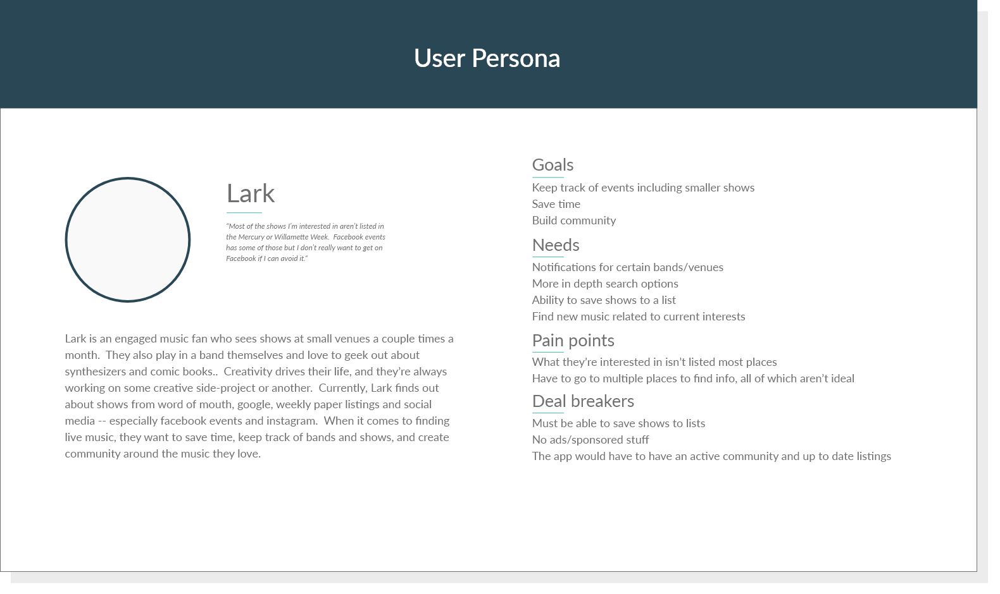
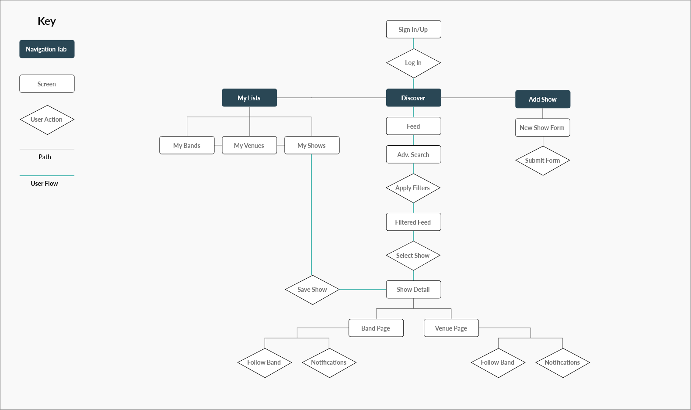
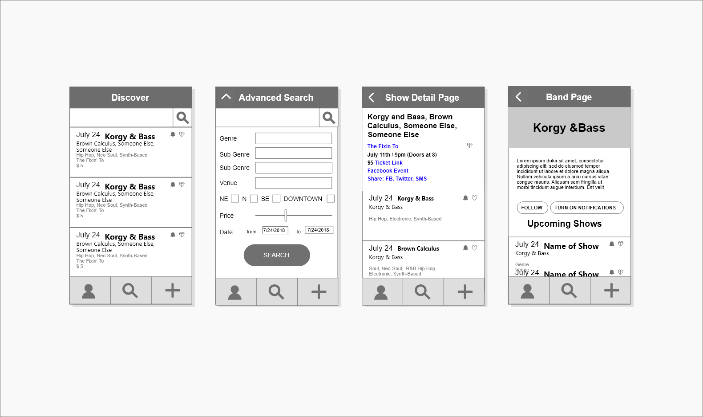
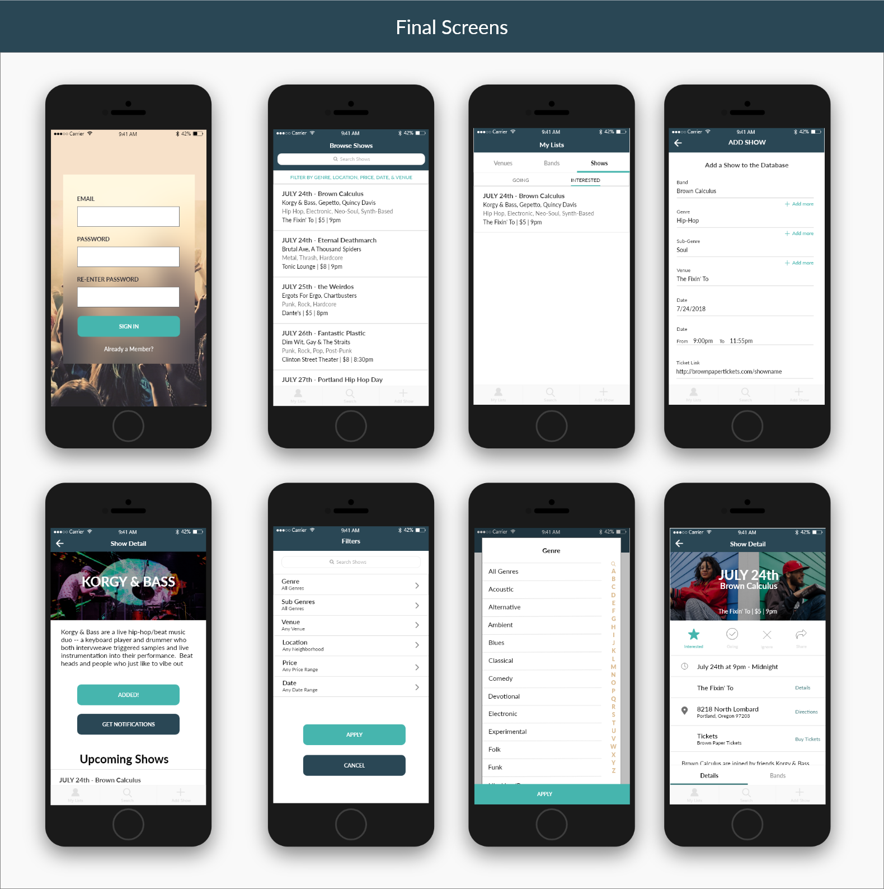
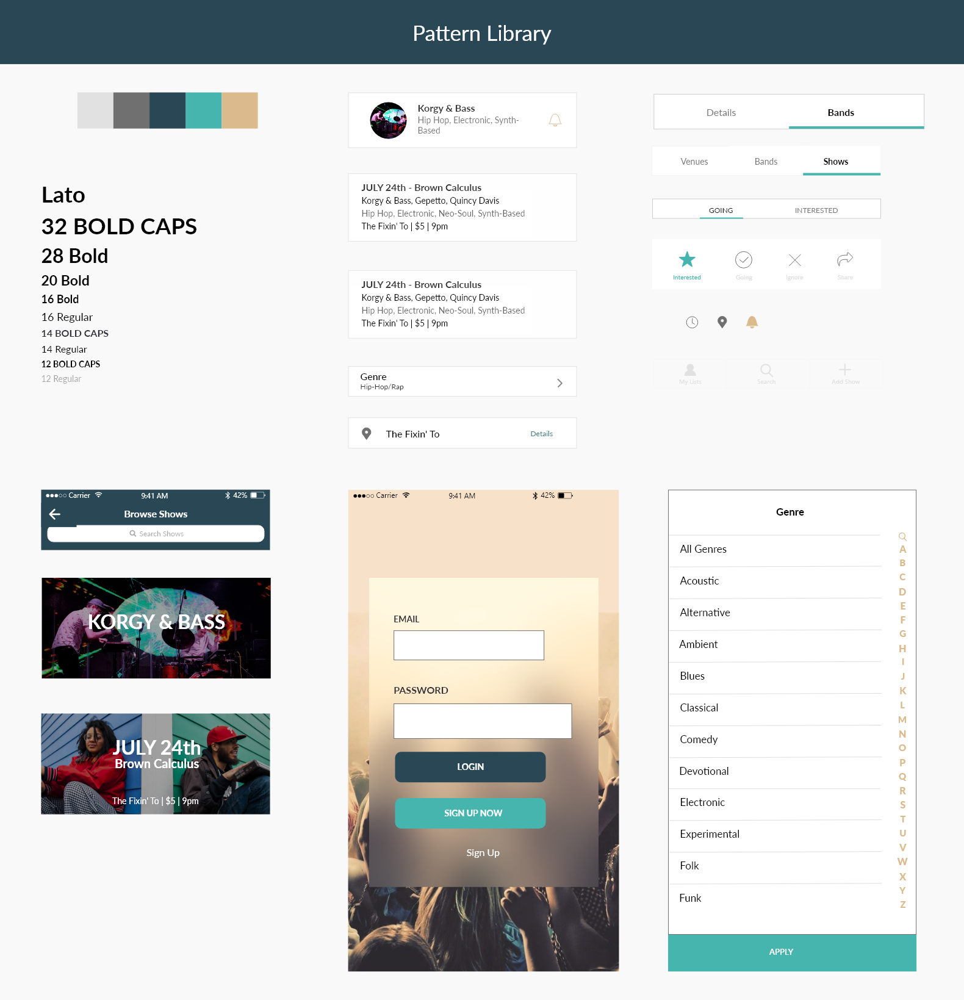

Overview
I designed a mobile app that allows users to find local concerts quicker and more easily so they can spend their time enjoying music and building community.
The Problem
Because underground concerts (think house shows, low-key bar shows) are not frequently not submitted to mainstream outlets to be listed, music fans looking to check out up-and-coming acts have to check various social media platforms, blogs, mailing lists, weekly papers and venue websites. This is a huge time-drain, and every time they do it they have to start from scratch -- there’s no single platform they can use to keep track of everything they’re interested in.
The Solution
ShowFinder allows fans to find shows easily by combining listings from conventional music listings with Facebook events and shows published directly by bands in the app. Users have deep search options such as location, sub-genre and price range to find exactly what they’re after, and they can save favorite bands and venues for easy access later. This allows them to spend less time and energy looking for a show to go to, and more time enjoying music and building community!
Tapable Prototype
Process
- Research
- Analysis & Synthesis
- Ideation
- Interaction Design
- Visual Design
- Prototyping
Research
Every product should be a marriage between the needs of the owner and the user, rooted in empathy. To start out, I set out to find out who these parties are and what they need.
Treating myself as the stakeholder, I asked myself: What are my goals for this app? What are my goals for creating tools for the music community in general? What drives me, and what do I want to get, and provide to music lovers?
Next, I surveyed music lovers in my circles, asking them about their interests and behaviors in regard to music and community, how they currently find concerts, pain points, and what they’d like this app to provide.
Analysis & Synthesis
I distilled the insights gained from my user surveys into a User Persona -- someone we can relate to, whose shoes we can walk in as we imagine the solution to their challenges.
Ideation
Now that I knew who I was designing for and what they needed, I began brainstorming possible solutions for how to tangibly get them there. Letting my creativity take the wheel, and viewing everything through the eyes of our user persona, I churned out ideas for features and scribbled countless possible user flows and wireframes.
Interaction Design
From my piles of possibilities, the dots started to connect and I nailed down a map of the application, with routes the user would take to achieve the primary tasks. From there, I knew which screens to design and I committed to a layout of each one for the first iteratio.
User Flows
Wire Frames
Visual Design
 User Testing/Next Steps
If I choose to continue developing ShowFinder, the next step will be toconduct user testing sessions in which I observe users attemping to perform different tasks. I'll take that feedback and use it to improve the app in the next iteration.
If you're interested in seeing this app become a reality, please reach out via the contact form! If there's enough interest, I'll see if I can put together a team to build it!
top